Чрезвычайные
ситуации природного
характера
Стихийные бедствия не спрашивают разрешения. Разбираемся, что это такое, как они возникают, чем грозят и — главное — как действовать, чтобы выжить. Отдельный блок — наша страна и Оренбургская область.
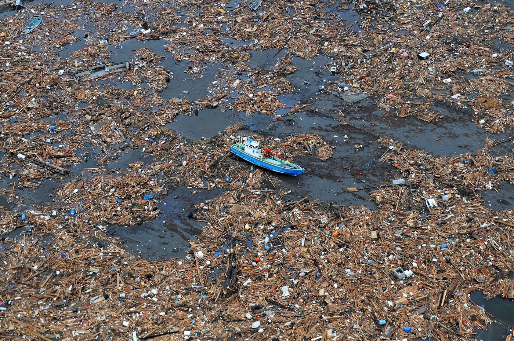
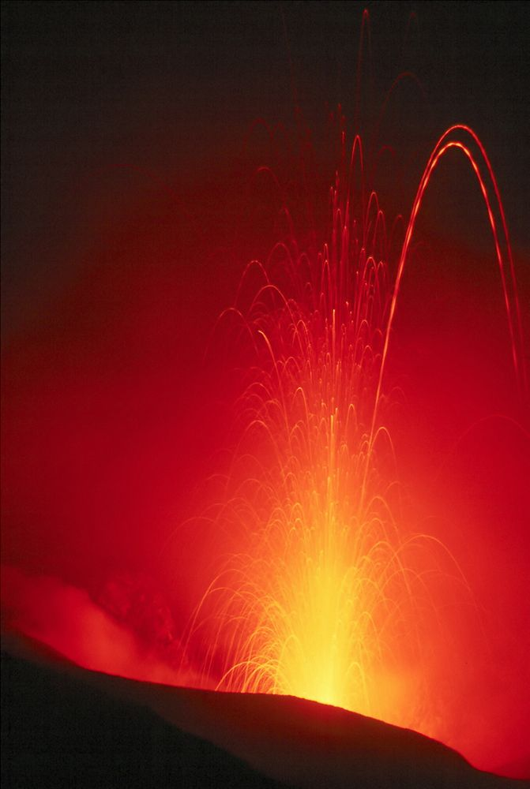
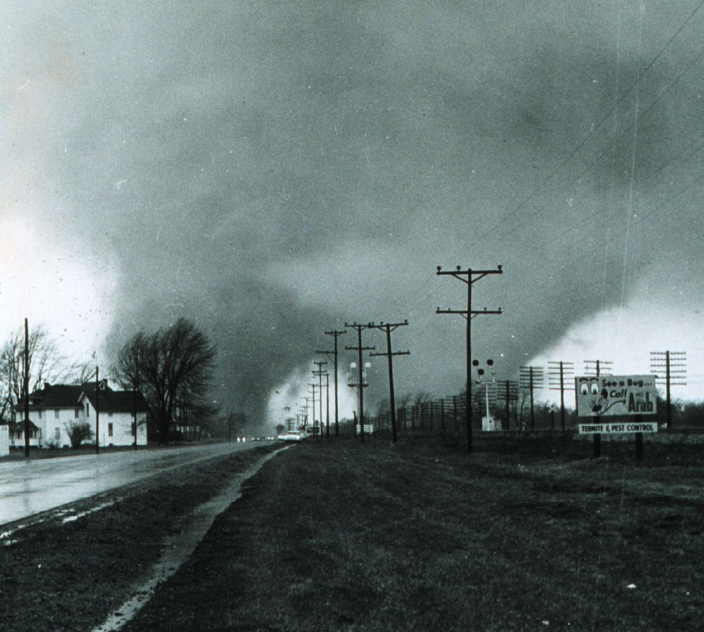
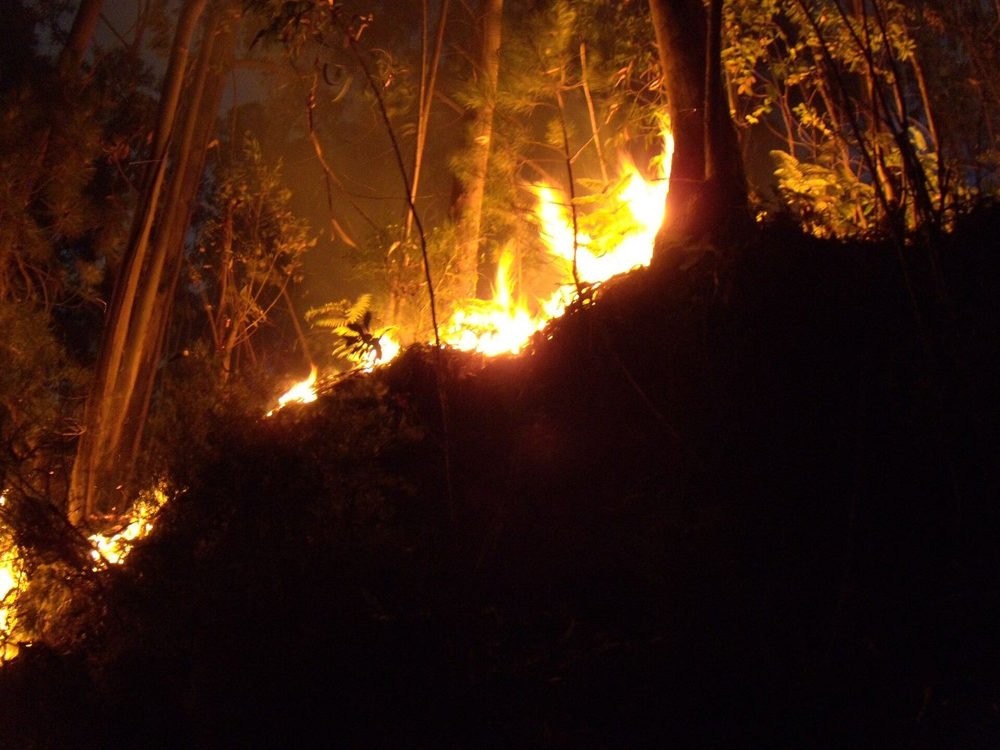
Что такое чрезвычайная ситуация
ЧС — это обстоятельства, при которых опасность реализовалась или может реализоваться
Человек, группа людей, государство или окружающая среда не могут самостоятельно преодолеть последствия без специальных мер. Главный признак — угроза жизни и здоровью людей и нарушение их нормальной жизнедеятельности.
Внезапность
Стихия не предупреждает заранее о конкретном месте и времени. Пострадавшие часто действуют в панике.
Масштаб
Затрагиваются десятки и тысячи людей, разрушаются здания, дороги, коммуникации.
Коллективность
Помощь требует усилий многих людей и специальной техники — МЧС, волонтёров, врачей.
Чем природная ЧС отличается от техногенной
- Источник опасности — сама природа
- Не связана с деятельностью человека
- Часто непредсказуема во времени
- Источник — ошибки людей и техники
- Авария на производстве, транспорте, объекте
- Можно предотвратить профилактикой
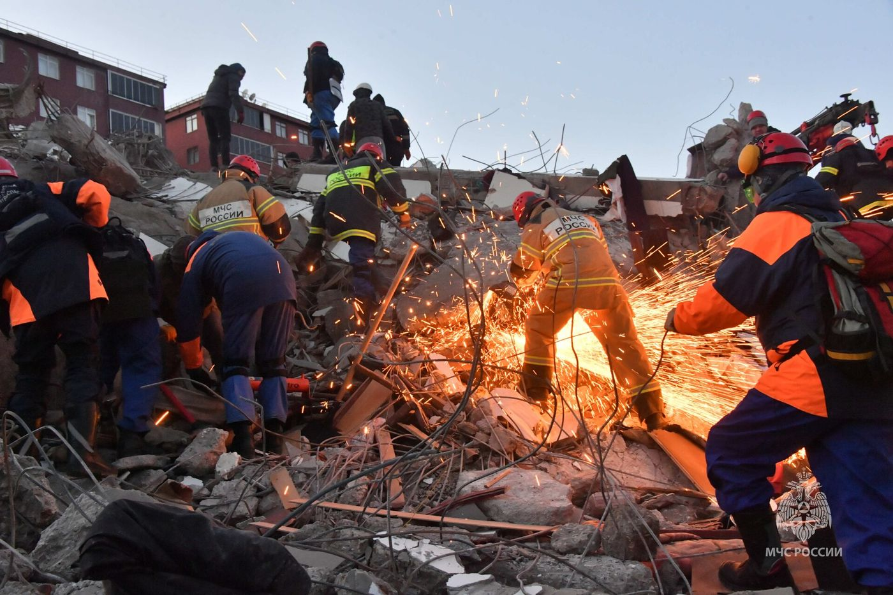
Цепочка событий
Чем раньше распознана опасность и быстрее реагируют люди, тем меньше жертв. Именно об этом мы поговорим в конце.
Четыре вида чрезвычайных ситуаций
Природные
стихийные бедствия- Землетрясения
- Цунами
- Вулканы
- Торнадо, ураганы
- Наводнения
- Оползни, лавины
- Лесные пожары
Техногенные
аварии, катастрофы- Аварии на АЭС и химзаводах
- Взрывы, пожары
- Крушения транспорта
- Обрушение зданий
- Аварии на трубопроводах
Экологические
среда обитания- Загрязнение воздуха и воды
- Кислотные дожди
- Вырубка лесов
- Разрушение экосистем
- Радиационное заражение
Биологические
живые организмы- Эпидемии и пандемии
- Вспышки инфекций
- Нашествие вредителей
- Биологическое оружие
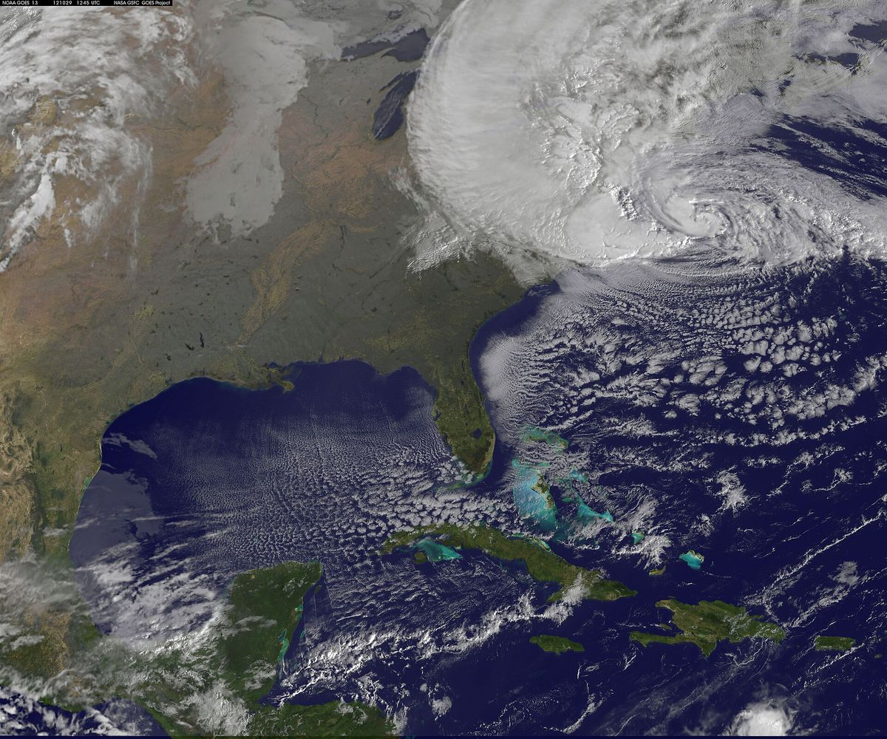
Природные ЧС делят ещё на две группы
геофизические и гидрологические
Землетрясения, вулканы, цунами, наводнения, оползни, сели, лавины, воздушные вибрации.
метеорологические и космические
Ураганы, тайфуны, смерчи, торнадо, шквалы, град, наводнения от тайфунов, падение метеоритов.
Где и сколько происходят бедствия
Самые опасные регионы планеты
Япония, Индонезия, Филиппины, Камчатка, Чили, Новая Зеландия — почти все сильные вулканы и землетрясения.
Здесь рождаются ураганы, тайфуны и смерчи. Пик сезона — август–октябрь.
Сейсмически активная зона: Непал, Индия, Пакистан, Иран, Афганистан. Высокая опасность оползней и лавин.
Больше всего наводнений — в Нидерландах, Бангладеш, Египте, Индии и в устьях Миссисипи и Амура.
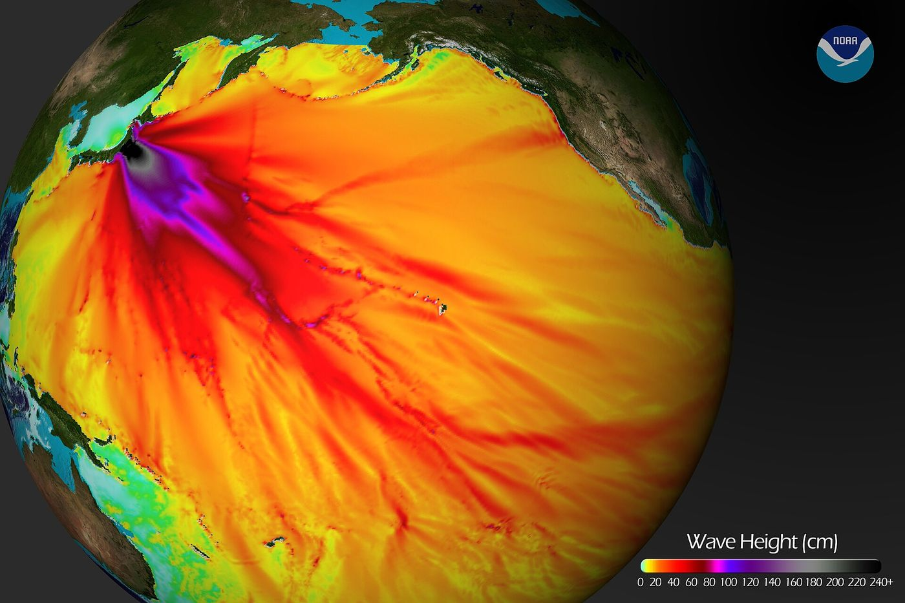
Россия в цифрах
На страну приходится значительная часть площади сейсмоопасных зон — Камчатка, Курилы, Байкал, Дальний Восток, Северный Кавказ, Урал, Якутия. Ежегодно сейсмологи регистрируют тысячи землетрясений разной силы.
🌐 Землетрясение
Землетрясение — внезапное нарушение целостности земной коры: горные породы трескаются, сдвигаются, блоки коры перемещаются. Это самый разрушительный и самый непредсказуемый вид ЧС.
Как это происходит
Главные опасности
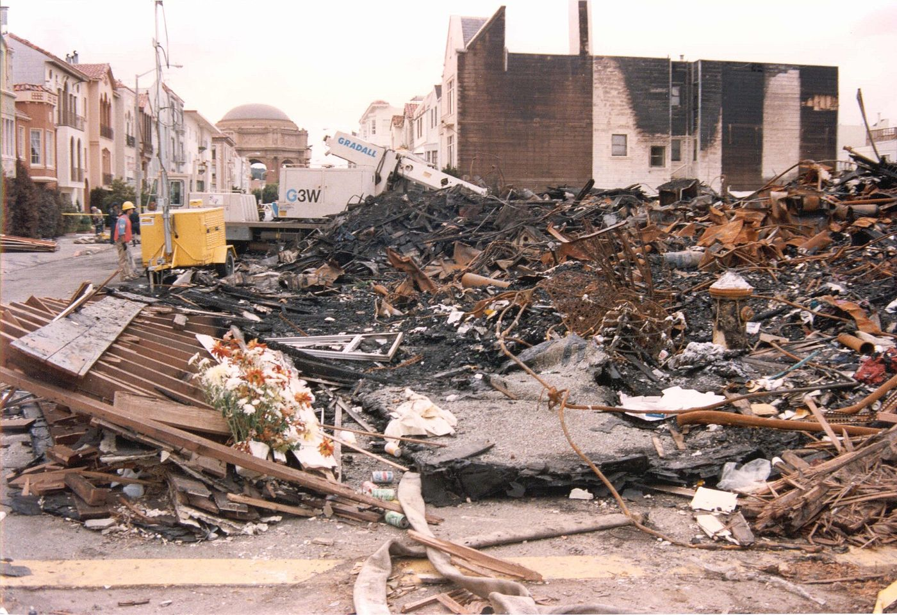
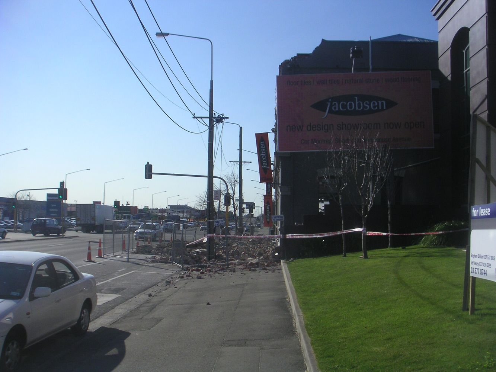
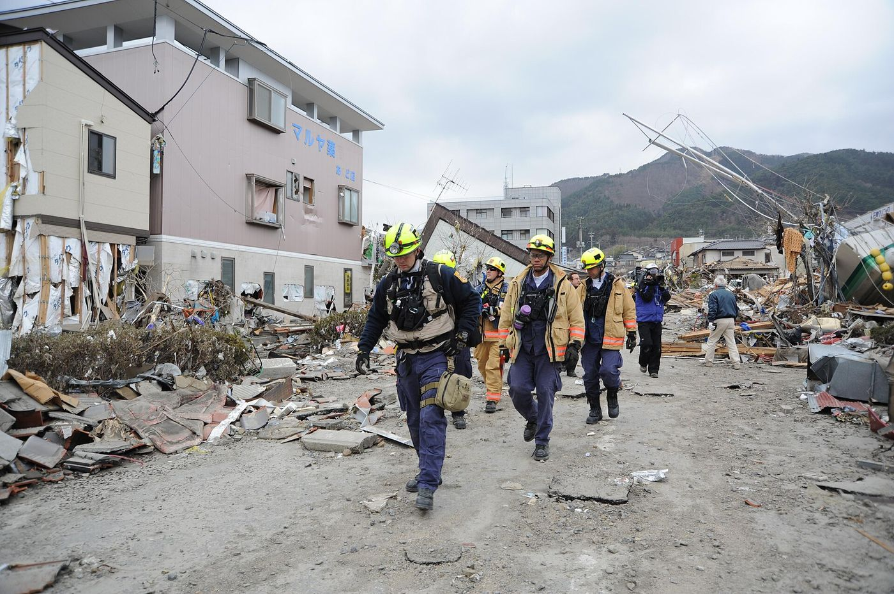
Шкала магнитуд Рихтера
Каждый следующий балл — примерно в 30 раз больше энергии, чем предыдущий.
Современный аналог — шкала ML (moment magnitude), но по принципу она такая же.
🌊 Цунами
Цунами (япон. «волна порчи») — серия огромных волн, вызванных резким смещением дна океана. Это не обычный прибой: в открытом море волна почти незаметна, но у берега внезапно вырастает до десятков метров.
Причины возникновения
Что происходит с волной
- Скорость в океане — 700–900 км/ч (как самолёт!), но высота всего 0,5–1,5 м
- У берега вода мелеет, волна резко теряет скорость и растёт в высоту
- Первое движение воды — отступление моря (видно дно!) — это сигнал бежать
- Затем приходит стена воды, которая сносит всё: дома, мосты, поезда, лес
- Вода откатывается и уносит всё обратно, в том числе людей в океан
⚠️ Запомни
В России сильные цунами бывали на Камчатке (1952) и на Курилах. Самое разрушительное цунами в истории — в Индийском океане в 2004 году: погибло более 227 000 человек в 14 странах.
Признаки цунами — беги!
Правило: отойти от берега ввысь (в гору) или на 1,5–2 км от берега. Не бежать поперёк потока и не пытаться спасти вещи!
🌪️ Торнадо (смерч)
Торнадо — вихревое вращение воздуха диаметром от десятков метров до 2–3 км, втягиющее воздух к центру и переносящее его вверх. Область поражения узкая, но разрушительная.
Откуда берётся торнадо
- Суперячейка — мощная грозовая туча, где воздух сильно закручивается
- Над тёплым морем/сушей и холодным воздухом сверху возникает мезоциклон
- В нём формируется воронкообразное облако — «тромб»
- Скорость ветра в ядре — 300–500 км/ч, давление падает так сильно, что может лежать сдутый дом
Опасности
Если увидел торнадо
- Спрятаться в подвал или внутреннее помещение нижнего этажа (в ванную)
- Отойти от окон — стекло летит внутрь
- Не выходить на улицу и не пытаться снимать видео
- Если в машине — свернуть в низину, перекрыть газ, держаться за поручень
- Не приближаться к воронке: воронка может двигаться и всасывать человека
🌀 Ураган, тайфун, шторм
Ураган (в Азии — тайфун) — мощный тропический вихрь над океаном с центром низкого давления («глазом»), спиральными дождями и ветрами от 120 до 300+ км/ч.
Как рождается ураган
- Над тёплым океаном (от 26–27 °C) воздух поднимается вверх
- Вверху начинает закручиваться — рождается мощный вихрь с «глазом» в центре
- Приток воздуха со спины спирали усиливает вращение (эффект Кориолиса)
- Вихрь усиливается, пока хватает тепла над водой — и идёт к берегу
Что приносит ураган
Действия при урагане
- Получить сигнал тревоги — не игнорировать его!
- Убрать с улицы всё, что может улететь, закрыть окна
- Зарядить телефон, иметь фонарик и документы
- Уйти в подвал здания из бетона или кирпича, подальше от окон
- После — не выходить до снятия сигнала: риск падения деревьев и обрушения конструкций
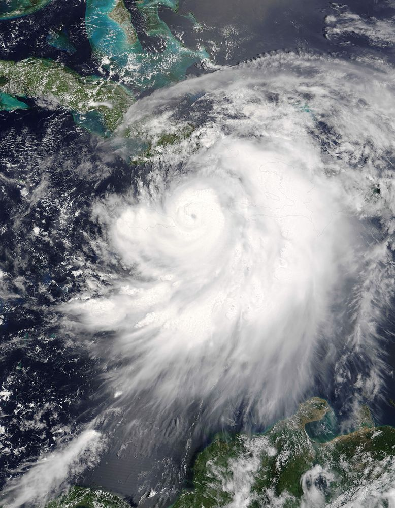
Сила урагана по категориям (Саффира — Симпсона)
Чем выше категория, тем меньше времени на эвакуацию и тем разрушительнее прилив.
🌋 Извержение вулкана
Вулкан — горная постройка с выводящим каналом, через который магма выходит на поверхность. Извержение — это не «взрыв», а выброс горных пород, газа и лавы.
Виды вулканов
Три главные опасности вулкана
- Лавовый поток — не очень быстрый (от 1 до 300 м/ч), но неумолимый: сжигает и заливает всё
- Пеплопад и газы — вулканическая пыль оседает на крышах, рушит их; газы вызывают отравление
- Пирокластический поток — раскалённая смесь газа и камней со скоростью до 700 км/ч. Это смертельно в секунды.
Интересный факт
Извержение вулкана Тамбора (1815) выбросило столько пепла, что по всей Земле прошли «год без лета»: небо тускло, аномальные заморозки, голод у миллионов людей. Вулканы способны менять климат планеты.
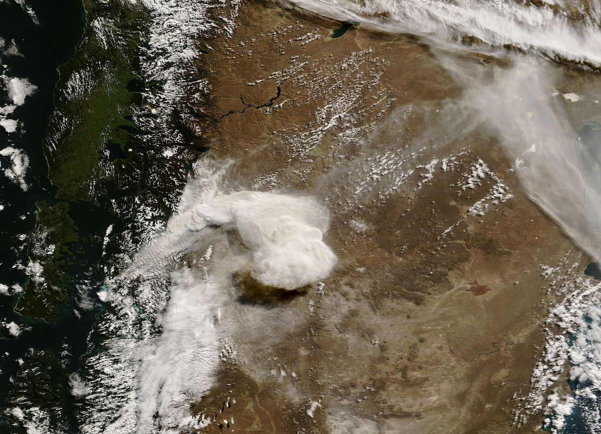
🌊 Наводнение
Наводнение — подъём уровня воды в реке, озере или море, при котором вода выходит из русла, поймы и затапливает прилегающую территорию. Самое частое стихийное бедствие в России.
Почему бывают наводнения
Как спасаться
- Подняться на верхний этаж или возвышенность — вода не проходит там, где стоит сухо
- Закрыть газ, электричество, воду — токи смертельны
- Не плавать на машине по дороге: 1 метр воды сносит легковой автомобиль
- Двигаться только по известным безопасным маршрутам, держась за стены
- Взять с собой документы, воду, аптечку, телефон и заряженный powerbank
⚠️ Не делай этого
- Не спускайся к реке «посмотреть на воду» — вода приходит стремительно
- Не переезжай по горной дороге во время ливня — возможен оползень
- Не пей воду из водопровода до очистки — риск инфекций
- Не трогай руками оборванные провода и не входи в затопленные подвалы
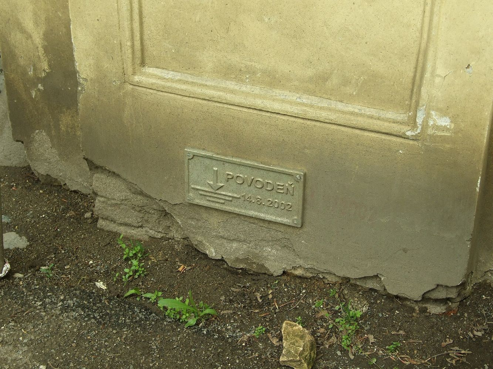
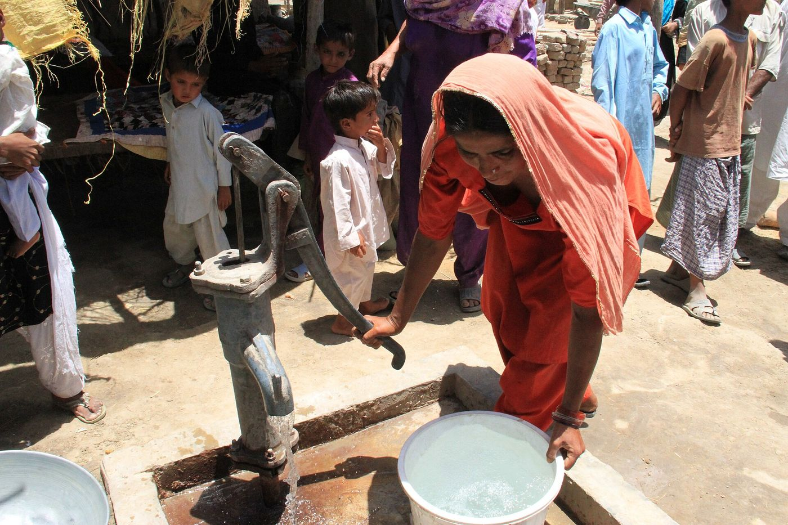
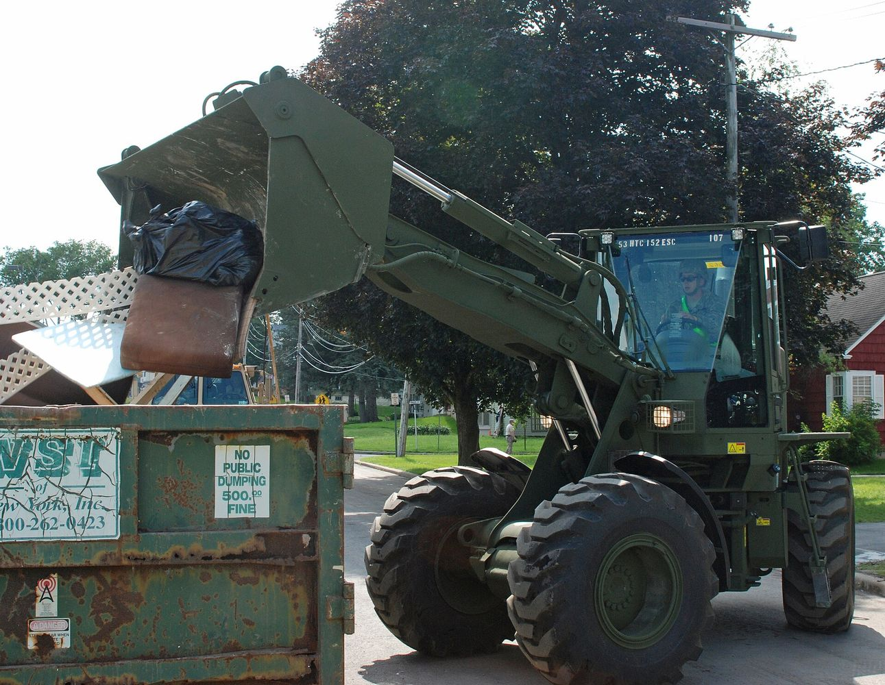
⛰️ Оползни, сели и лавины
Оползень — смещение массы горных пород по склону вниз под действием силы тяжести. На склоне всегда накапливается напряжение — и в какой-то момент камень не выдерживает.
Оползни
Смещение грунта и камней. Бывают оплывины (грязь + торф) — самые опасные: несут дома и лес.
Селевые потоки
Смесь воды, грязи и камней с горных водосборов. Скорость до 100 км/ч — не остановить.
Лавины
Сход снежных масс со склона. Скорость до 300 км/ч, воздушная волна сносит всё даже вне пути.
Что вызывает оползень
Признаки приближающегося оползня
- Трещины на склоне и на стенах зданий, «просадка» фундамента
- Звук, похожий на гром или потрескивание из-под земли
- Мутные ручьи, вода в реке стала мутной и поднялась без дождя
- Необычные зигзаги на дороге, разрывы трубопровода, смещение заборов
- Птицы и звери массово уходят со склона — это главный природный сигнал!
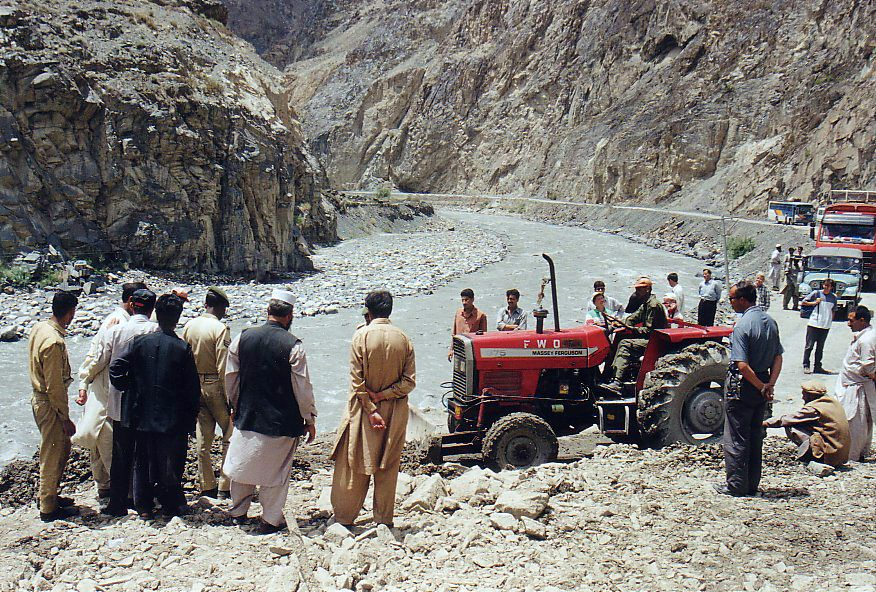
Как защититься
- Не строить дом на крутом склоне и у подножия горы
- Не вырубать лес на склонах — корни держат грунт
- При ливне не ходить в горы и ущелья, не спускаться в долины
- Слышали шум воды/грунта — сразу уходите поперёк склона и выше, а не вниз по нему
- В лавиноопасный сезон не кататься на лыжах на склонах без контроля
🔥 Лесные и торфяные пожары
Лесной пожар — неконтролируемое горение растительности, которое распространяется со скоростью до 20 км/ч и вместе с торфяным пожаром горит под землёй месяцами.
Низовой
Горит трава, кустарник, подстилка. Быстрый, но можно потушить.
Верховой
Горит крона — огонь идёт по кронам со скоростью ветра. Не остановить без авиации.
Торфяной
Горит под землёй, без пламени и дыма. Тушить водой — только усугубишь: вода превращается в пар.
Причины пожаров
Более 80% лесных пожаров — по вине человека. Это значит, что пожар можно предотвратить.
⚠️ Опасность дыма
Очень опасен угарный газ CO — не имеет цвета и запаха, но отравляет мгновенно. Также вредны мелкодисперсные частицы: попадая в лёгкие, они оседают там на годы. В задымлённом помещении закройте двери, окна, загерметизируйте щели мокрой тканью.
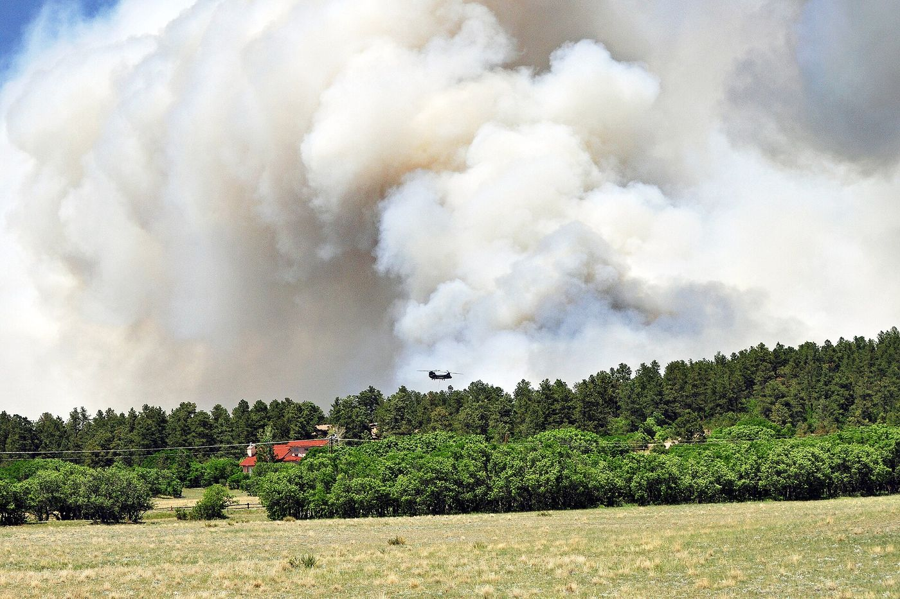
Если вы оказались в лесу при пожаре
- Звоните 112 и сообщите точное место — даже если пожар небольшой
- Отходите перпендикулярно фронту огня и вверх по склону
- Дышите через мокрую ткань, пригнитесь как можно ниже
- Если горит трава — бегите по уже пройденному месту или по зимнему снегу
- Не открывайте двери в горящий дом — вспышка обратной тяги убьёт мгновенно
⛈️ Грозы, град, шквалы, ливни
Гроза — это мощный электрический разряд в грозовом облаке. Отсюда молнии, град, шквал и ливень. Даже при ясном небе гроза может прийти за секунды: кучево-дождевое облако растёт быстро.
Молния
Разряд в 30 000 °C — в 5 раз горячее поверхности Солнца. Прямой удар убивает мгновенно, опасно на расстоянии до 10 м.
Град
Ледяные шары до 10 см и тяжелее килограмма. Бьёт по крышам, машинам, посевам, наносит людям травмы.
Шквал
Внезапный резкий порыв ветра до 40–60 м/с. Ломает деревья, сносит крыши, переворачивает автомобили.
Ливень
За час может выпасть месячная норма. Итог — ливнёвка, оползни, подтопление подвалов.
Правила поведения во время грозы
- Не находитесь на открытом поле, на холме, возле одинокого дерева или столба
- Уберите из рук металлические предметы: зонт, удочку, ключи, телефон
- Не вставайте под одинокими деревьями — молния идёт по мокрой коре и земле
- В доме: не трогайте проводку, трубы, приложитесь к металлу — не стоять у окна
- Телефон во время грозы лучше не использовать на улице
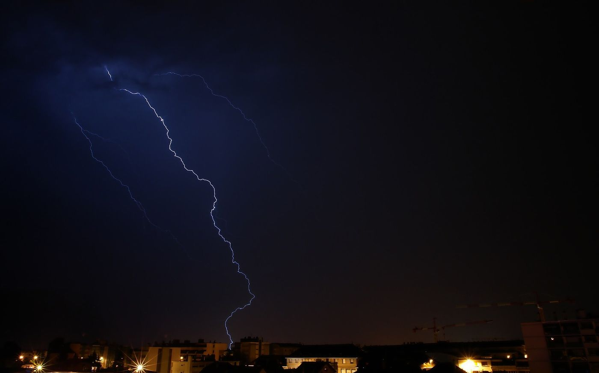
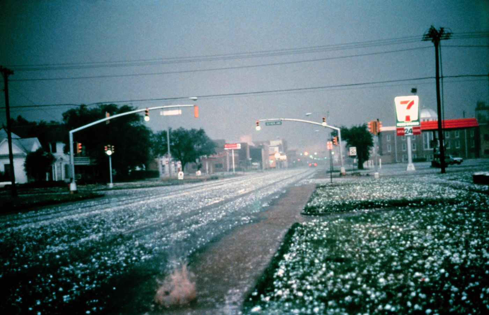
Помни: гроза приходит быстро
Раздели время на 3 — скорость звука ~340 м/с. Если гром слышен через 3 секунды, молния примерно в 1 км. Это классическая задача на уроке физики.
🇷🇺 Природные ЧС в России
Россия занимает 11 часовых поясов и обладает огромным разнообразием природы. Практически в каждом регионе есть свой «профильный» вид стихийного бедствия.
Камчатка, Курилы
29 действующих вулканов, землетрясения, цунами, вулканический пепел, лавины.
Северный Кавказ
Сейсмика, оползни, сели, лавины, снежные лавины на перевалах.
Дальний Восток, Байкал
Землетрясения, наводнения на Амуре и Лене, ледовые заторы.
Сибирь, Якутия
Лесные и торфяные пожары, наледь, вечная мерзлота, экстремальные морозы.
Юг России
Засухи, пыльные бури, ураганы и шквалы на побережье Чёрного и Азовского морей.
Арктика и Крайний Север
Бураны, метели, наледь, гололёд, сжатие льдов.
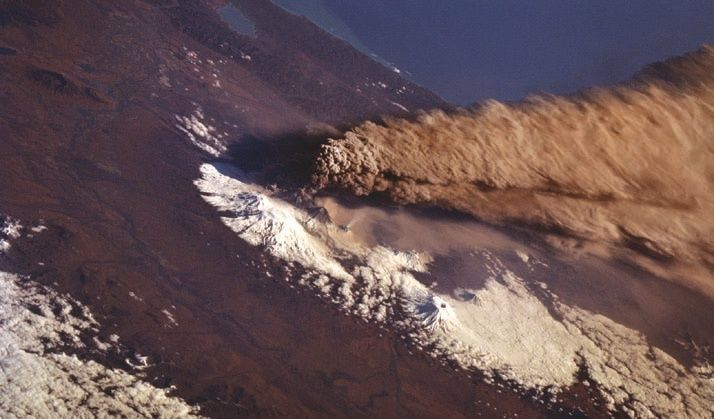
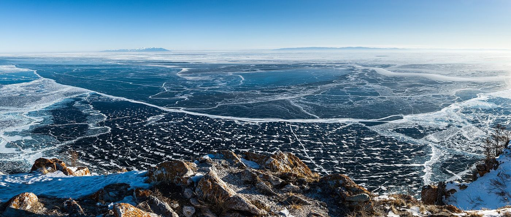
Главное правило для России
Следи за официальными оповещениями МЧС: SMS, сирены, сообщения на ТВ и в интернете. Это единственная возможность узнать о надвигающейся ЧС вовремя. Убери заряженный телефон подальше от подоконника — так до сигнала дойдёт уведомление.
Знакомство с нашим регионом
Климат — главная особенность
Климат резко континентальный: область далеко от океанов, поэтому здесь очень жарко летом и очень холодно зимой, а перепад температур достигает 34–38 °C.
Природа и рельеф
- Река Урал — одна из крупнейших рек Европы (2428 км, из них 1164 км в области). Также Сакмара, Илек, Самара
- Озеро Шалкар-Ега-Кара — крупнейший водоём области (9600 га). Знаменитые солёные озёра Соль-Илецка
- Высшая точка — гора Накас (667 м), низшая — у реки Чаган (27 м)
- Бузулукский бор — крупнейший сосновый лес в лесостепной зоне
- Чернозёмы занимают 79% пашни — почвы очень плодородные, поэтому область — важный аграрный регион
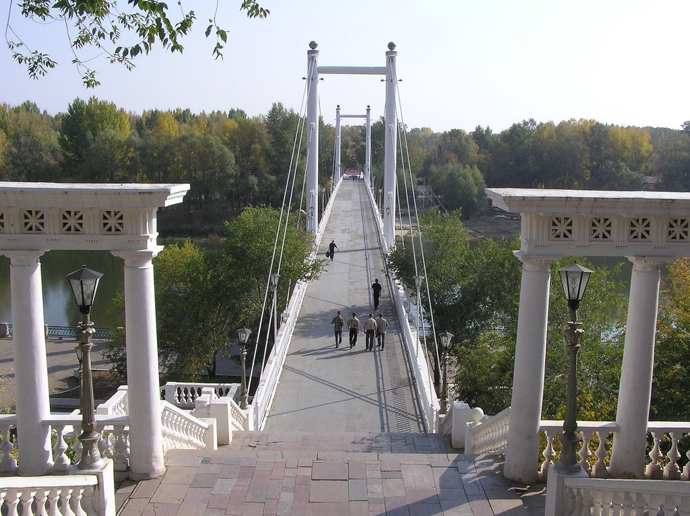
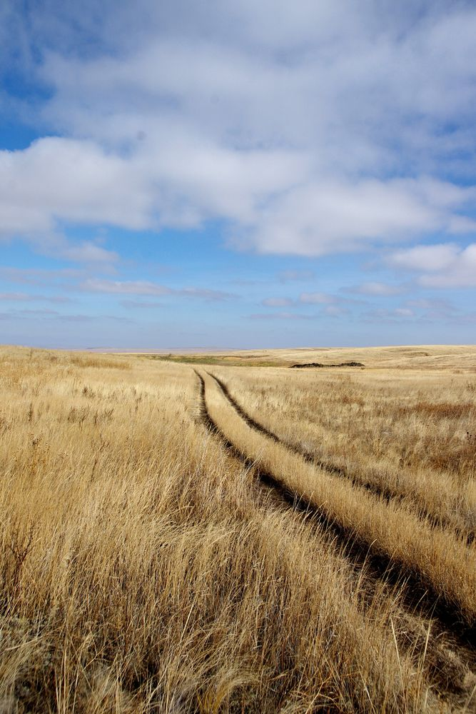
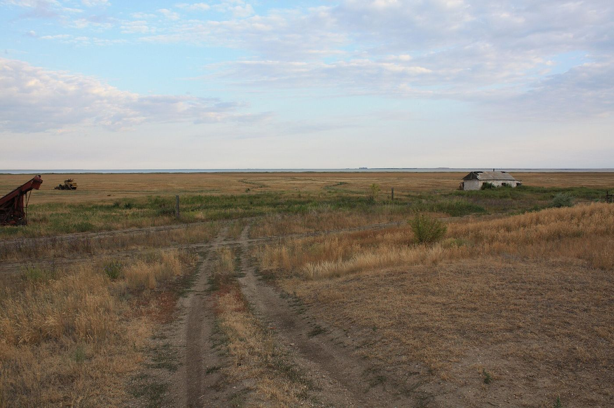
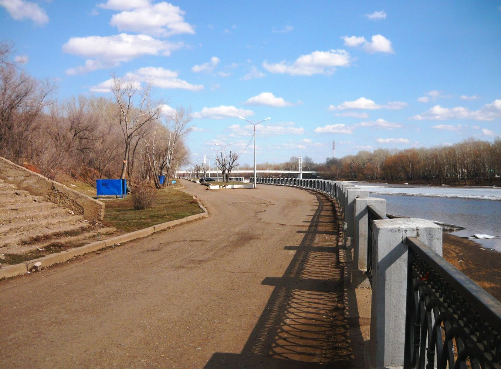
Какие стихийные бедствия бывают у нас
Засуха и суховеи
главная опасность регионаИз-за резко континентального климата осадков мало, а 60–70% выпадает летом. В засуху пересыхают реки и озёра, гибнет урожай, падает уровень грунтовых вод, резко растёт риск пожаров.
Пыльные и «сальные» бури
ветер + сухая почваСильный ветер поднимает пыль с распаханных земель — в воздухе стоит плотная буря, падает видимость, уносит верхний плодородный слой. Настоящее «сальное явление» переносит через регион огромные объёмы пыли, иногда с зарубежья.
Наводнения (половодье)
весна: таяние снега + дождиВесной река Урал, Сакмара, Илек выходят из русла и затапливают прибрежные сёла. Под водой — поля, дороги, мосты и дома. Летние ливни тоже дают резкий подъём воды в балках и оврагах.
Грозы, град и ураганы
резкие перепады погодыЛетом бывают сильные грозы и крупный град, который бьёт по крышам домов, автомобилям и посевам. Шквалы и ливни ломают деревья и рекламные конструкции, переносят мусор, подтапливают дома.
Бураны, метели и гололёд
зима и межсезоньеЗимой метели и снежные навалы парализуют дороги, закрывают школы. Сильные перепады «оттепель → мороз» дают гололёд и наледь: падают ветки и лёд с крыш, скользкая дорога опасна для авто и пешеходов.
Оползни и обвалы
склоны Предуралья и Южного УралаНа относительно крутых и застроенных склонах после сильных дождей возможны оплывины и оползни — особенно в Предгорном районе и на хребтах Губерлинские горы, Ирендык. Под угрозой — дачи, дороги, садовые участки.
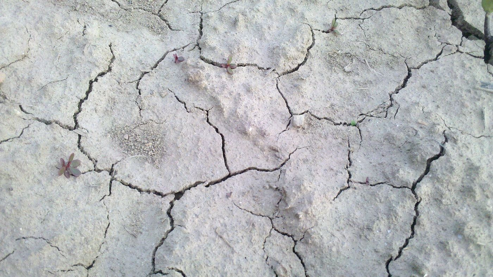
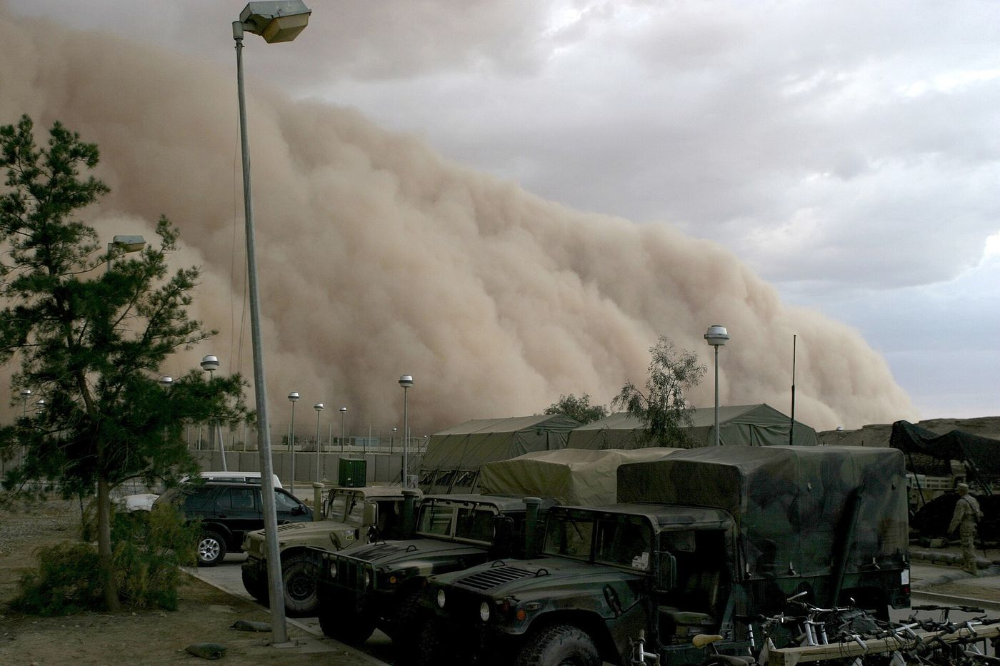
Памятка: что делать в нашем регионе
🥵 При засухе и жаре
- Пей воду медленно, но часто, избегай перегрева в 12–16 часов
- Не разжигай костёр в степи и лесополосах — трава сухая, вспыхнет мгновенно
- Следи за прогнозом и уровнем воды в реке
- Помогай пострадавшим от засухи хозяйствам и не затапливай водой поля
🌪️ При пыльной буре
- Закрой окна и форточки, завесь плотную ткань
- Защити органы дыхания: маска, марля, влажный платок
- В автомобиле — включи режим циркуляции воздуха, не открывай окна
- Не выходи на улицу во время самой бури, особенно если плохо видишь
🌊 При наводнении
- Не выходи на размытую дорогу и не переходи проезжую часть по колено в воде
- Отключи газ и электричество, если это безопасно
- Поднимись на верхний этаж или на возвышенность
- Слушай сирены: в Оренбуржье есть система оповещения о наводнениях
⛈️ При грозе, граде и буране
- Спрячься в здание при граде и грозе, не стой под одиноким деревом
- При буране не выходи на дорогу — метель за blinding сбивает с пути
- Держи в запасе тёплую одежду, еду и заряженный телефон
- Если падает лёд с крыш и деревьев — не стой у зданий и машин
🔎 Знай наизусть
- Адрес ближайшего укрытия и эвакуационного пункта
- Местные балки и овраги — в ливень туда не спускаться
- Расположение мостов через Урал — в половодье часть закрывают
📦 Тревожный рюкзак
- Вода, еда, аптечка, фонарь
- Документы и заряженный powerbank
- Тёплый свитер и плёнка для окон от пыли
📞 Экстренные номера
- 112 — единая служба спасения
- Работает без SIM-карты и денег на счёте
- Сообщи точный адрес, район и что случилось
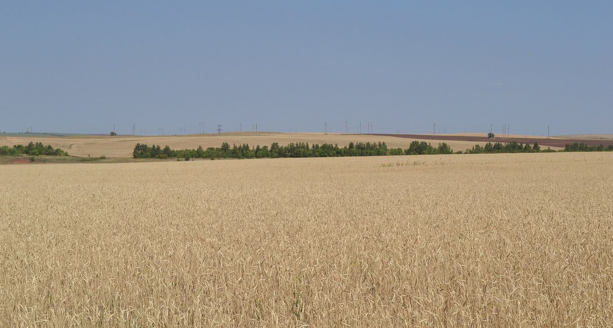
Как люди предсказывают стихию
🔬 Мониторинг: как это работает
- Сейсмографы — фиксируют даже микроземлетрясения; по ним строят карту разломов
- Радары метеорологические — видят вихри, смерчи, дождевые фронты за 100–300 км
- Спутники — наблюдают за океанами, вулканами, льдами, пожарами по всей планете
- Сейсмические буи в океане — предупреждают о цунами за десятки минут
- Камеры наблюдения и датчики на вулканах, склонах, реках, озёрах
⚡ Система оповещения
Россия, Япония, США и другие страны имеют системы раннего предупреждения. В Японии после землетрясения сигнал о цунами приходит на телефоны за несколько минут — этого хватает, чтобы уйти на возвышенность.
Почему прогноз важен
Точно предсказать землетрясение учёные пока не могут, но за 1–3 дня штормовое предупреждение, прогноз паводка и оповещение о цунами реально спасают тысячи жизней.
Насколько опасно: уровни ЧС
| Уровень | Класс ЧС | Что происходит | Пример |
|---|---|---|---|
| Низкая | Локальная | Пострадавших единицы, помощь без привлечения сил МЧС | Локальный оползень, подтопление подвала |
| Повышенная | Муниципальная | Десятки пострадавших, подключаются спасательные службы города | Сильный ливень, обрушение дерева на машину |
| Высокая | Региональная | Сотни пострадавших, разрушены здания и дороги, нужна техника | Землетрясение 6–7 баллов |
| Чрезвычайная | Федеральная / трансграничная | Тысячи жертв, полная перестройка системы управления | Цунами 2004 г., землетрясение 2011 г. в Японии |
Зелёный
Школа работает, прогноз без опасных явлений. Действуют обычные правила безопасности.
Жёлтый
Повышенная готовность: проверяются документы, заряжаются телефоны, включаются сирены.
Красный
Эвакуация немедленно: сирены, прерывание занятий, движение по маршруту в укрытие или на возвышенность.
Правило первой минуты
🛡️ Как защититься от стихии
🏠 До ЧС: подготовка
- Знать свой адрес и адрес ближайшего укрытия
- Собрать тревожный рюкзак: документы, вода, еда, аптечка, фонарь, powerbank
- Скачать приложение по ЧС, встать на учёт в школе
- Дома: не вешать тяжёлые предметы на стены, окна закрывать на защёлку
- Знать номера экстренных служб: 112, 101, 102, 103, 104
⚡ Во время ЧС: правила
- Выполнять требования сирен и сигналов оповещения
- Не загружать телефонные линии звонками не по делу — связь нужна спасателям
- Не мешать работам МЧС, не лезть в зону ЧС любопытства из опасности
- Действовать быстро, но не суетиться — толпа и паника опаснее стихии
- Слушать взрослых и спасателей
🤝 После ЧС: помощь
- Не возвращаться в здания до разрешения — афтершоки и обрушение
- Оказать доврачебную помощь: остановить кровь, укрыть от холода
- Помогать пострадавшим, но не мешать спасателям
- Не входить в повреждённые здания — могут обрушиться
- Слушать рекомендации врачей по прививкам и профилактике (при ЧС важно)
Памятка: куда и как спасаться при разных бедствиях
| Бедствие | Главное правило | Куда уходить | Чего не делать |
|---|---|---|---|
| 🌐 Землетрясение | Упасть на четвережки, закрыть голову руками | На улицу, на безопасное место у здания | Не прыгать в окно, не бежать по лестнице, не стоять у стен |
| 🌊 Цунами | Уйти от берега немедленно | В гору или 1,5–2 км от берега | Не бежать поперёк потока, не спускаться к воде |
| 🌪️ Торнадо | Спрятаться в подвал | Подвал, ванная, внутренние стены | Не стоять у окон, не выходить на улицу |
| 🌀 Ураган | Убраться от окон, закрыться | Подвал / крепкое здание без окон | Не выходить до отмены тревоги, не снимать «видео» |
| 🌋 Вулкан | Следовать эвакуации | В сторону от вулкана, на возвышенность | Не спускаться в долину, не смотреть на извержение вблизи |
| 💧 Наводнение | Отключить газ и свет | Верхние этажи, возвышенность | Не плыть на машине по воде, не трогать проводку |
| ⛰️ Оползень | Уходить поперёк склона | Вверх по склону, выше зоны | Не стоять в долине у подножия горы |
| 🔥 Пожар | Позвонить 112 | Коллективно к очагу, к водоёму | Не открывать дверь в горящий дом, не тушить торфяной водой |
Что нас научили катастрофы
Факты, которые изменили мир
- 1964, Аляска: землетрясение 9,2 балла порушило Аляску — ускорили введение строгих строительных норм
- 1974, Узбекистан: ураган и провал Амударьи привели к созданию системы противопаводковых плотин
- 1985, Мексика: землетрясение — в училищах начали тренировать детей
- 2004, Индийский океан: цунами унёс 227 000 жизней → в Индии и Японии построили системы предупреждения
- 2011, Япония: после цунами Фукусимы Япония перестроила все здания, парси и систему оповещения
- 2016, Зебрюг (Бельгия): шквал сорвал крыши — в Европе усилили требования к креплению кровли
Главный вывод
От каждой катастрофы человечество должно вынести вывод и изменить правила: новые нормы строительства, системы оповещения, техника спасения, обучение населения. Там, где выводы сделаны, жертв заметно меньше.
Сколько детей может спасти подготовка
Правило для каждого
- Знай, где выходы и укрытия в своём доме, школе
- Держи тревожный рюкзак у входа — он может спасти жизнь
- Всегда выполняй сигналы тревоги — это не «учебная шутка»
- Расскажи о ЧС родителям и друзьям
- Не проходи мимо чужой беды — помощь важнее любопытства
🧠 Мини-тест по теме
Ответы разобраны
Источники фотографий
Все фотографии в презентации взяты из Wikimedia Commons и распространяются на свободных лицензиях (Public domain, CC BY, CC BY-SA). Наведи на фото и нажми, чтобы увеличить. Благодарим авторов за возможность использовать их материалы.
Что нужно запомнить
Экстренные номера
Работает даже без SIM-карты и без денег на счёте.
Источники фактов: данные МЧС России, ООН (UNDRR), USGS, NOAA, Всемирная метеорологическая организация, данные по Оренбургской области, учебные материалы по ОБЗР. Фотографии — Wikimedia Commons (свободные лицензии). Презентация подготовлена для урока ОБЗР.